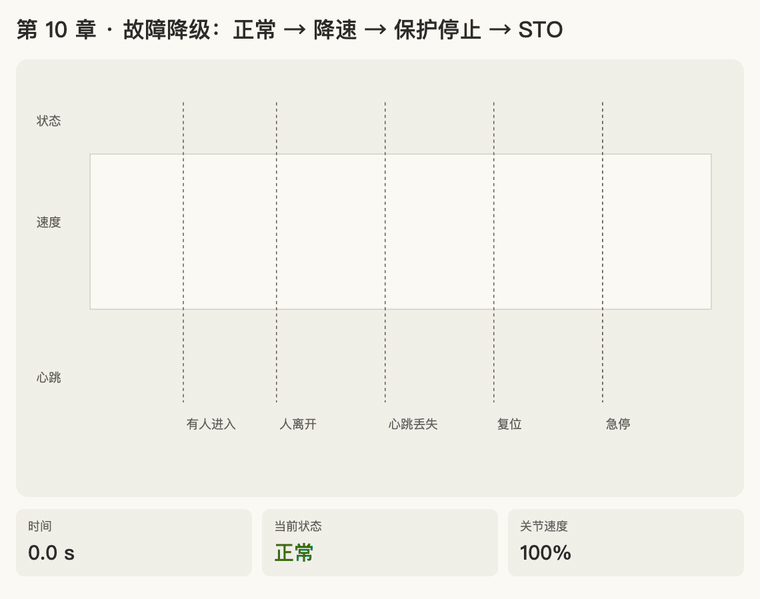

第 10 章 · 安全、可靠性与整机案例：怎么设计一台机器人
本章回答：机器人安全是怎么分层设计的？有哪些标准？出故障时怎么"优雅地停下"？把前 9 章串起来，五类典型整机的软硬件架构各长什么样？
编写日期：2026-11-04 · 上一章：第 9 章 仿真、数据与部署 · 下一章：无（本书最后一章） · 总览：00-overview.md
对应原文：无本地原文。ISO 10218、ISO/TS 15066、IEC 61800-5-2 等标准需购买，本章的停止类别和协作模式按各标准公开的摘要与驱动器厂商手册整理；停止距离、碰撞检测是本书自己的推导
本章缩写：STO（第 5 章）；SS1 / SS2 = Safe Stop 1 / 2（安全停止类别 1 / 2）；SLS = Safely-Limited Speed（安全 / 限速）；SLP = Safely-Limited Position（安全 / 限位）；PLC（第 5 章）；IEC = International Electrotechnical Commission（国际电工委员会）；ISO（第 5 章）；ISO/TS：TS = Technical Specification（技术规范）；PL = Performance Level（性能 / 等级）；SIL = Safety Integrity Level（安全 / 完整性 / 等级）；AMR = Autonomous Mobile Robot（自主 / 移动 / 机器人）；AGV = Automated Guided Vehicle（自动 / 导引 / 车）；SSM = Speed and Separation Monitoring（速度与距离监控）；PFL = Power and Force Limiting（功率与力限制）；FCI = Franka Control Interface（Franka 控制接口）；SDK（第 7 章）；ABS = Anti-lock Braking System（防抱死 / 制动 / 系统）；TTL = Transistor-Transistor Logic（晶体管 / 晶体管 / 逻辑：舵机常用的单线串口电平）；EKF（第 4 章）；DoF（第 2 章）；QDD（第 3 章）；\(\tau_{th}\)：th = threshold（阈值）。全部缩写见 附录 · 缩写与术语表
讲解
第 1 步：安全是一层一层叠的
白话类比：开车。你会小心驾驶（软件策略）；车有 ABS 和自动紧急刹车（监控层）；最后还有安全带和气囊（硬件）。不能因为"司机很小心"就拆掉安全带。
| 层 | 做什么 | 例子 | 依赖软件吗 |
|---|---|---|---|
| 本质安全 | 从设计上让伤害变小 | 轻量连杆、低减速比、圆角软包、限制最大力矩 | 否 |
| 硬件安全回路 | 不经过主控直接切断动力 | 急停 → 安全继电器 → STO；抱闸；双通道接线 | 否 |
| 安全控制器 | 认证过的独立 CPU 监控速度 / 位置 / 力 | 安全 PLC、驱动器内置安全功能（SLS 安全限速、SLP 安全限位） | 是，但独立且经认证 |
| 软件监控 | 看门狗、限幅、碰撞检测、状态机 | 力矩超阈值 → 停；心跳丢失 → 停 | 是 |
| 策略层 | 规划时就避开危险 | 避障、速度规划、不确定时请求人工 | 是 |
原则：越靠下的层越简单、越独立、越不依赖上层。AI 模型只能放在最上层，永远不能当最后一道保险。
第 2 步：停机也分等级
IEC 61800-5-2（可调速驱动的功能安全）定义了几种停止方式：
| 停止类别 | 做法 | 用在 |
|---|---|---|
| STO（Safe Torque Off，停止类别 0） | 立即切断电机出力，靠抱闸 / 惯性停 | 急停、严重故障 |
| SS1（类别 1） | 先受控减速，停下后再 STO | 大多数保护停止：比直接断电更不容易甩出去 |
| SS2（类别 2） | 受控减速后保持出力停在原地（安全停止监控） | 暂停、等人离开后继续 |
腿足机器人的特殊难题：直接 STO 会让机器人摔倒，本身就可能伤人或砸坏东西。所以人形 / 四足通常先尝试"受控蹲下 / 坐下"再断电，相关标准（如针对动态稳定腿足机器人的 ISO 25785-1）还在制定中。
第 3 步：故障降级状态机
正常运行 ──(有人进入协作区)──→ 降速（速度与距离监控）──(人离开)──→ 正常
│ │
│(通信超时 / 力矩异常 / 温度过高) │(人继续靠近 / 接触力超限)
▼ ▼
保护停止（SS1：减速 → 停） ──(复位确认)──→ 正常
│
│(急停按下 / 安全回路断开 / 驱动器故障)
▼
STO（切断动力，抱闸锁死）──(人工检查 + 复位)──→ 正常
关键机制： - 看门狗：驱动板若连续几个周期没收到主站报文 → 自己进入保护停止。 - 限幅：任何上层给的指令都要过一遍速度、加速度、力矩、关节范围的硬限制。 - 碰撞检测：实际电流 / 力矩和动力学模型预测值差太多 → 判定碰撞。 - 状态与日志：每次降级都记录原因，回流到数据飞轮（第 9 章）。
第 4 步：安全相关标准（只需知道名字和管什么）
| 标准 | 管什么 |
|---|---|
| ISO 10218-1/-2 | 工业机器人本体 / 系统集成安全（2025 年发布新版） |
| ISO/TS 15066 | 协作机器人：人机接触时允许的力和压力（按身体部位） |
| ISO 13482 | 服务机器人（个人护理机器人）安全 |
| ISO 13849-1 | 安全相关控制系统，性能等级 PL a–e |
| IEC 61508 / IEC 62061 | 功能安全，安全完整性等级 SIL 1–4 |
| IEC 61800-5-2 | 驱动器安全功能（STO、SS1、SLS…） |
| ISO 3691-4 | 无人驾驶工业车辆（AMR / AGV） |
协作的四种模式（ISO 10218 / TS 15066）：安全监控停止、手动引导、速度与距离监控（SSM）、功率与力限制（PFL）。
第 5 步：五类整机拆解
① 协作臂（以 Franka 类为例） - 硬件：7 DoF，谐波减速，每关节力矩传感器；控制柜内实时控制器。 - 软件：1 kHz 实时接口（Franka 的 FCI / libfranka）可直接下发关节力矩或阻抗参数；ROS 2 驱动走 ros2_control。 - 要点：力矩传感器让它能做阻抗控制和碰撞检测，是 VLA 研究最常见的单臂平台之一。
② 四足（以 Unitree Go2 / ANYmal 类为例） - 硬件：12 个 QDD 关节；IMU；足端无力传感器（靠电流和运动学估计接触）；板载 ARM 计算 + 可选 Jetson。 - 软件：RL 策略 50 Hz 输出关节目标，驱动板 PD 高频追踪；状态估计用 IMU + 腿部运动学 EKF；上层导航可接 ROS 2 / Nav2。
③ 人形（以 Unitree G1 / Figure / Optimus 类为例） - 硬件：20–40+ DoF；腿部大力矩关节（QDD 行星或丝杠直线执行器）、手臂谐波或行星、灵巧手（腱驱或微型电机）；多路 EtherCAT / CAN-FD；48 V 级电池；Jetson Orin / Thor 级主控。 - 软件：底层全身 RL 策略或 MPC + WBC；上层 VLA / 双系统；ROS 2 或自研框架；安全上倾向"受控蹲下"。 - 要点：散热（关节电机持续力矩）、手的可靠性、摔倒保护、成本是主要工程难点。
④ 移动操作（Mobile ALOHA / Stretch / Galaxea R1 类） - 硬件：轮式底盘（差速或全向）+ 1–2 条臂 + 升降；底盘 LiDAR + 多相机。 - 软件：导航栈（定位、建图、规划）和操作策略分开或全身统一策略；任务层 LLM 规划把两者串起来。
⑤ 低成本研究平台（ALOHA / SO-100） - 硬件：舵机（内置位置环 + RS-485 / TTL 总线），USB 接 PC；主从臂遥操作。 - 软件：LeRobot / ACT 等，PC 上直接跑策略，50 Hz 发位置指令。 - 要点：精度和刚度差，靠学习策略 + 视觉闭环补偿；非常适合入门和数据采集研究。
第 6 步：选型清单（从零设计时逐条过）
- 任务、环境、负载、工作空间 → 构型和 DoF（第 2 章）
- 每关节峰值 / 持续力矩、转速、是否频繁接触 → 电机 + 减速器（第 3 章）
- 需要的感知 → 传感器清单 + 标定方案 + 时间同步方案（第 4 章）
- 关节数 × 频率 → 总线；模型大小 × 推理频率 → 主控；功率 × 时间 → 电池（第 5 章）
- 控制模式：位置 / 阻抗 / 力矩；平衡由谁负责（第 6 章）
- 软件框架、实时隔离方案（第 7 章）
- 自主架构：模块化 / 端到端 / 双系统（第 8 章）
- 仿真模型、遥操作方式、数据格式、部署与 OTA（第 9 章）
- 安全回路、停机策略、适用标准（本章）
动画演示

可交互版：animations/10-safety-states.html。
怎么看：
- 上面是状态条：绿 = 正常，黄 = 降速，橙 = 保护停止（SS1），红 = STO。中间是关节速度，下面是主站心跳。
- 第 1 个事件：有人进入协作区 → 速度降到一半，人离开后恢复。
- 第 2 个事件：心跳连续丢了几拍 → 看门狗触发 SS1，速度沿斜坡降到 0（受控减速，不是瞬间断电）；复位后恢复。
- 第 3 个事件：急停 → STO，动力立刻切断，速度靠抱闸很快归零，需要人工复位。
公式
| 名称 | 式子 |
|---|---|
| 停止距离（受控减速） | \(d = v\,t_{react} + \dfrac{v^2}{2a}\) |
| 速度与距离监控 | 允许速度满足 \(S_{人} + S_{机器人} + C < S_{p}\)（\(S_p\) = 当前分离距离，p = present） |
| 碰撞检测 | \(\|\tau_{meas} - \tau_{model}\| > \tau_{th}\) |
练习与作答记录
题 1：机械臂末端 1 m/s 运动，系统反应时间 50 ms，最大减速度 5 m/s²。从检测到危险到停下，末端还会走多远？
作答：（待作答）
题 2：为什么说"AI 模型不能当最后一道保险"？结合本章的安全分层说明。
作答：（待作答）
题 3：人形机器人和工业臂在"急停"策略上为什么不同？如果你来设计人形的急停，会怎么做？
作答：（待作答）
口诀
安全一层叠一层，越往下越简单、越不靠软件；AI 只在最上面。
能减速就别断电（SS1），真危险立刻断（STO）；腿足机器人先蹲下再断。
本章复习卡片
A28 安全分层、A29 STO / SS1 / SS2、A30 设计一台机器人的九步清单（见 review.md）
附录 · 延伸阅读
留给以后深入学习用，不影响本章主线。★ 是建议先读的。
推荐阅读
- ★ ISO/TS 15066:2016 Robots and robotic devices — Collaborative robots：附录里按身体部位的力 / 压力阈值表（标准需购买，可先读各厂商的协作安全白皮书）。
- ★ Haddadin, De Luca, Albu-Schäffer，"Robot Collisions: A Survey on Detection, Isolation, and Identification"，IEEE T-RO 2017：碰撞检测方法综述。
- Haddadin, Albu-Schäffer, Hirzinger，"Requirements for Safe Robots: Measurements, Analysis and New Insights"，IJRR 2009：碰撞伤害实验。
- IEC 61800-5-2 安全功能介绍（各驱动器厂商手册通常有 STO / SS1 / SLS 的图解）。
- 整机资料：Franka FCI 文档、Unitree 开发者文档（Go2 / G1 SDK）、ANYmal 论文（Hutter et al.，"ANYmal – a highly mobile and dynamic quadrupedal robot"，IROS 2016）、Zhao et al. ALOHA（2023）、Fu et al. Mobile ALOHA（2024）。
- 本仓库：nvidia-cosmos3 家用机器人公司调研。
数学原理
- 匀减速运动：\(d = v^2/(2a)\)。
- 可靠性直觉：独立冗余通道的失效概率相乘。
公式清单
见正文"公式"一节的表。
代码对照：把本章的数字用代码算一遍
用 Python + NumPy（Numerical Python：数值 / Python）把讲义里讲过的数算一遍，不算练习题。代码在仓库本地
robot-system-architecture/solutions/chapter-code/ch10_safety_and_cases.py，配套测试tests/test_ch10.py，notebook 在notebooks/ch10_safety_and_cases.ipynb。Mac 上直接能跑，不需要 GPU：
bash cd robot-system-architecture/solutions/chapter-code uv run python ch10_safety_and_cases.py # 一步一步打印 uv run pytest tests/test_ch10.py
讲义 ↔ 代码（停止距离、力矩序列、阈值、失效概率都是编的，不是练习题的数）：
| 讲义 | 公式 / 说法 | 写法 | 跑出来 |
|---|---|---|---|
| 公式表 停止距离 | \(v\,t_{react} + v^2/(2a)\) | stop_distance(0.5, 0.1, 2.0) |
0.05 + 0.0625 = 0.1125 m |
| 第 3 步 碰撞检测 | \(\lvert\tau_{meas}-\tau_{model}\rvert > \tau_{th}\) | detect_collision |
第 5 拍超过 2 N·m |
| 第 3 步 看门狗 | 连续几拍没心跳 | watchdog(hb, 3) |
第 7 拍触发 |
| 第 3 步 / 动画 状态机 | 正常 → 降速 → SS1 → STO | step(state, event) |
有人进入 → 降速；心跳丢失 → SS1；急停 → STO，要人工复位 |
| 数学原理 冗余 | 独立失效概率相乘 | 1e-3 * 1e-3 |
1e-6 |
关键几行：
if event == "急停":
return STO # 急停在任何状态下都直接 STO
if state == STO:
return NORMAL if event == "人工复位" else STO # STO 只认人工复位，普通复位确认没用
代码里才看得到的 2 件事：
- 状态机里判断的顺序就是优先级：先查急停，再查 STO 要不要复位，再查故障，最后才是"有人进入"。顺序写反，急停就可能被别的分支吃掉。
- 看门狗数的是"连续"丢了几拍：中间收到一次心跳，计数就清零。
自己改一改（不影响练习答案）：
- 在
step里加一条：降速状态下"人继续靠近" → SS1，对照讲义第 3 步的图。 - 把看门狗的
max_missed改成 2，看同一串心跳在第几拍触发。